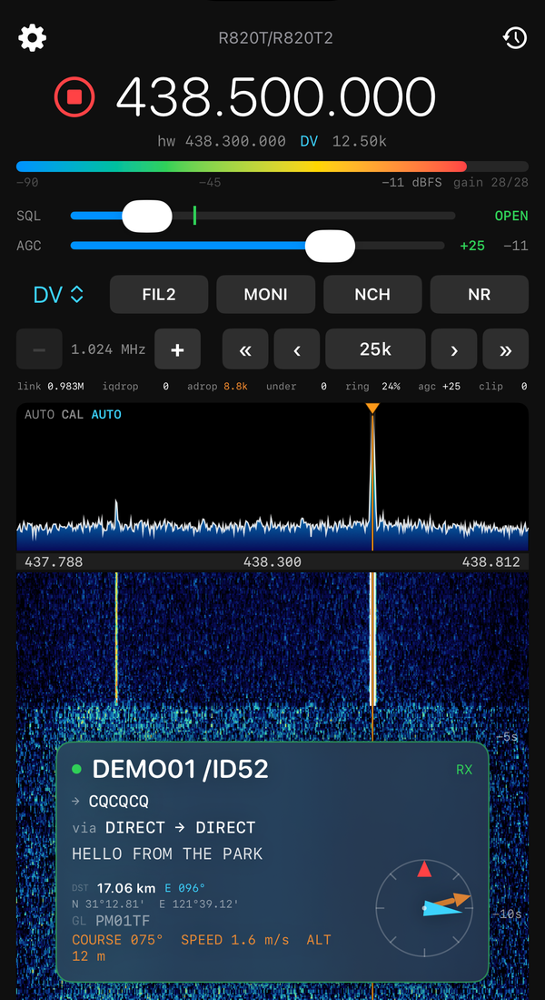
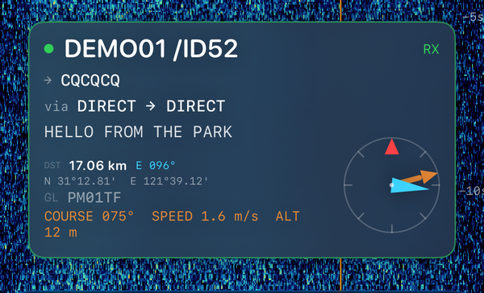
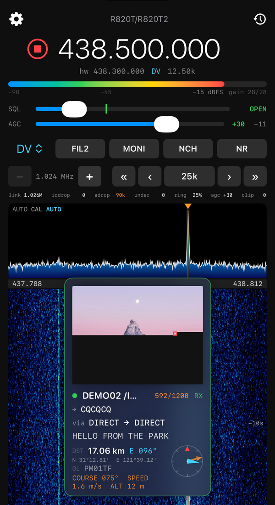
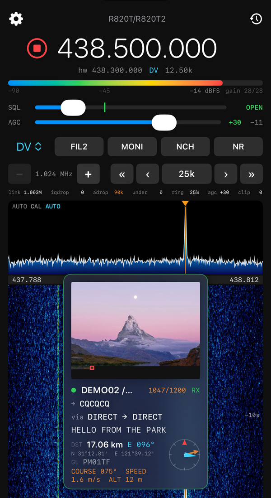
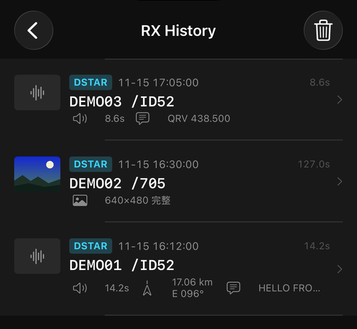

D-STAR digital voice
D-STAR is a digital voice mode common in amateur radio. SDRViewer receives it on the Receiver page: you hear the voice, see the callsign, the message and the position, and receive pictures a station sends. Every transmission received is kept.
Getting started
- Tune to a D-STAR frequencyOn the Receiver page, enter the frequency: a local D-STAR simplex channel, or a repeater's output.
- Choose DigitalTap the blue mode button on the left and choose Digital (Yaesu System Fusion is received in the same mode). NFM is the same: a D-STAR transmission turns the button to Digital and its end turns it back to NFM, and analogue FM on the same frequency plays as usual.
- Press play and wait for a transmissionWhen somebody transmits, a card appears at the bottom of the page and the decoded voice plays.
The frequency has to be right. A D-STAR channel is 6.25 kHz wide, and a receiver slightly off decodes nothing at all. Do the frequency calibration first. A handheld within a few metres of the receiver is also too strong to decode; move it away.
The card during a voice transmission


First line: the station's callsign and suffix (usually the radio, such as ID52). The green dot and the RX at the right mean it is being received now.
→ CQCQCQ: who is being called; CQCQCQ is a call to everybody.
via … → …: the repeaters used. DIRECT → DIRECT means none, a simplex contact.
Message: a line of up to 20 characters set in the station's radio.
Position (only when the station has GPS on): DST is the distance and bearing from you; beneath are the station's coordinates and grid locator (GL); COURSE / SPEED / ALT are the station's own heading, speed and altitude. On the dial the red triangle is north, the blue needle points to where the station is, and the orange arrow is the way the station itself is moving.
Distance and bearing are measured from your position. Enter coordinates or a grid locator under My position in the settings, or turn on following your location. Without it the card shows the station's coordinates and no distance: a distance from a guessed position would be wrong.
Receiving a picture
Radios such as ICOM's ID-52 and IC-705 can send photographs over D-STAR. While one is being sent the card shows the picture filling in block by block: what has arrived is drawn, what has not is blank, and a small red square marks the block that arrived last.


- A 640×480 photograph is 1200 blocks and takes about two minutes with fast data; a small 160×120 one is 80 blocks.
- The sender usually does not speak while sending a picture, so there is no voice. That is normal.
- If a few blocks are lost to a poor signal the picture is still shown, with each lost block filled from its neighbour.
- When the transmission ends the finished picture is saved to RX History.
RX History: what has been received
Tap the clock at the top right of the Receiver page. Each D-STAR transmission received is one record, newest first.

| In the list | Meaning |
|---|---|
| The thumbnail on the left | The picture, for a record that has one; a waveform symbol otherwise. |
| Speaker symbol and seconds | The record has voice, and how long it is. |
| Picture symbol and size | The record has a picture, with its size and whether it is complete. |
| Tower symbol, distance and bearing | The station sent a position; this is how far and which way it is from you. |
| Speech symbol and text | The station's message. |
Tap a record to open it, swipe left to delete one, and use the bin at the top right to clear them all.
Playing the voice

At the top of a record are the play button and a progress bar: tap to hear the voice as it was received. Below it the record is laid out in cards:
- Contact (通联): frequency, duration, mode and time.
- Station (对方): callsign, destination, repeaters and message.
- Position (位置, only when one was sent): the same dial as on the live card (on the right), the distance and direction, coordinates, course and speed, with the format the position arrived in.
- Signal (信号), for those curious about quality: voice frames and the bits the vocoder corrected (fewer means a cleaner signal), and the FEC verdict the app used to tell voice from data.
The field names on this page are shown in Chinese in the current version of the app.
Looking at a picture

A record with a picture shows it at the top. The picture line gives its size, the blocks received (1200/1200 is complete) and the quality the sender chose.
Common situations
| What you see | Why, and what to do |
|---|---|
| A signal on the waterfall, but no card and no sound | The frequency is off: do the frequency calibration. Or the signal is too strong: move away from the transmitter. Or it is not D-STAR. |
| A card with no callsign | You began receiving partway through. The callsign is sent once, at the start of a transmission; the voice, message and position are still decoded. |
| A card but no sound | The station is sending a picture or data, which has no voice; or the phone is muted. |
| The voice sounds a little robotic | That is the nature of the codec, and the app uses an open-source decoder whose audio is somewhat below the manufacturer's own. |
| No distance or bearing | The station sent no position, or you have not entered yours. |
| RX History is empty | A record is saved when a transmission ends, and receives triggered by noise alone are discarded. |